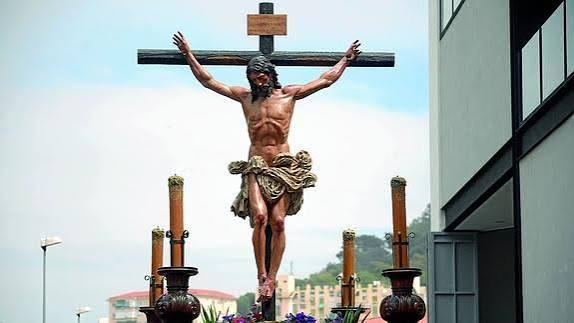
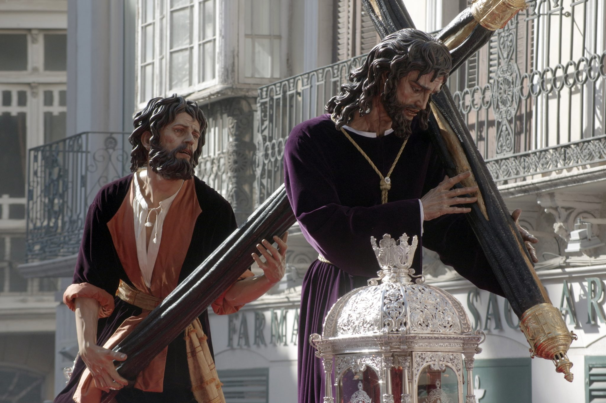
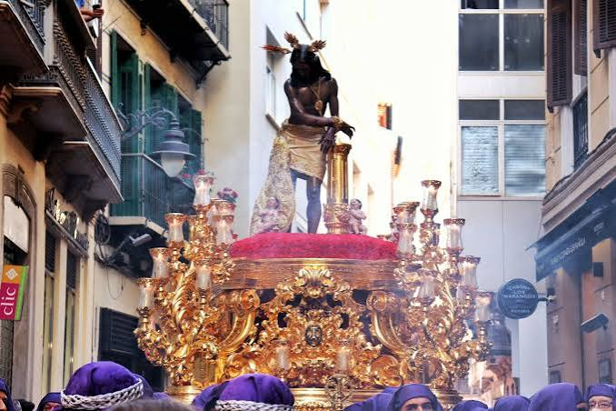
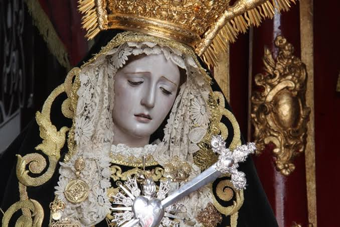
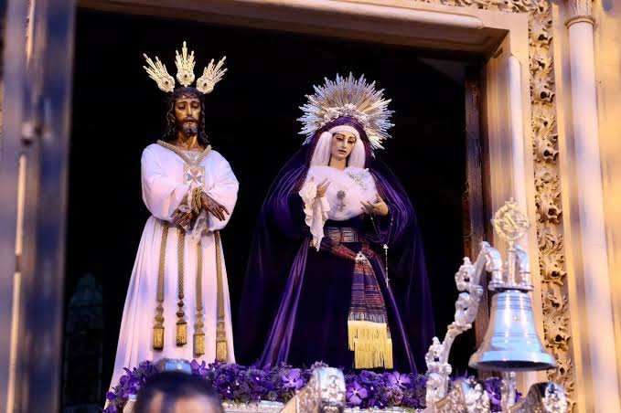
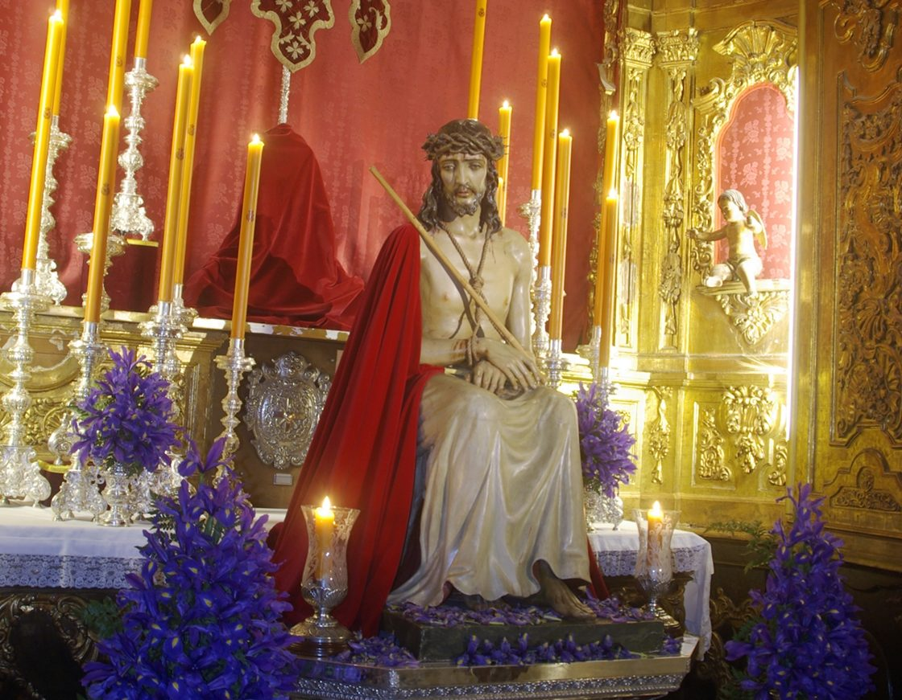

Historia, devoción y el caminar del Cautivo
El Lunes Santo en Málaga es una jornada de profunda devoción caracterizada por el caminar de hermandades emblemáticas. Es el día en que el "Cautivo", conocido como el Señor de Málaga, inunda las calles con su túnica blanca, acompañado por miles de promesas. También procesionan corporaciones históricas como Crucifixión, Pasión, Gitanos, Dolores del Puente y Estudiantes, consolidando una tarde llena de contrastes, fervor popular y un rico patrimonio que define el sentimiento malagueño.

Crucifixión
Fundada en 1980 en el barrio de Capuchinos. Destaca por la sobriedad de su cortejo y el imponente grupo escultórico del Stmo. Cristo de la Crucifixión.

Pasión
Establecida en la Iglesia de los Mártires. El Nazareno es una obra cumbre de Luis Ortega Bru, representando a Jesús cargando con la cruz con una fuerza impresionante.

Gitanos
Fundada en 1945, la Hermandad de la Columna destaca por el característico andar de sus portadores y los cantes flamencos que le dedican los devotos durante todo su recorrido.

Dolores del Puente
Ubicada en la Parroquia de Santo Domingo, en el barrio de El Perchel. Es una cofradía de corte muy serio y solemne, famosa por su bellísima Virgen de los Dolores.

El Cautivo
Conocido universalmente como el "Señor de Málaga". Es la procesión más multitudinaria de la ciudad, famosa por el majestuoso balanceo de su túnica blanca por el Puente de la Aurora.

Estudiantes
Vinculada estrechamente a la Universidad de Málaga. Su seña de identidad es el imponente canto del "Gaudeamus Igitur" por parte de los alumnos frente a la plaza del Obispo.